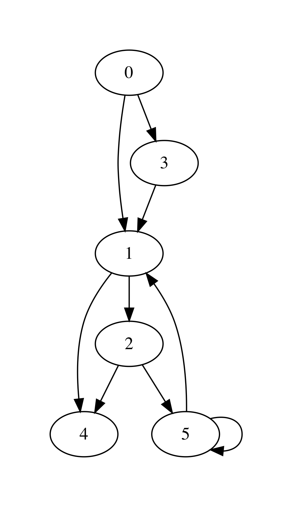

Representing Graphs¶
- File
Graphs.ml
Graphs are an important versatile mathematical abstraction, which is used to represent the relations between multiple objects. Such (possibly non-symmetric) relations can be frequently phrased in terms of connectivity and reachability, as we’ve seen before in the chapter on Equivalence Classes and Union-Find.
A graph is commonly represented in mathematics by a pair \(G = (V, E)\), where \(V\) is a set of the graphs’s vertices (nodes), represented the related elements, and \(E\) is a set of its edges (arcs) such that \(E \subseteq V \times V\).
As some graph examples, \(V\) and \(E\) can represent correspondingly:
- Cities and roads between them
- Routers in the networks and connections between them
- Statements in a program and a control-flow transitions
- Control states of a machine and transitions between them
- “Friendship” relations between users of a social network
It is common to think of \(V\) to be represented by a segment \(\{0 ... (n - 1)\}\) of natural numbers for some \(n\) (so that \(n\) is the size of the set of vertices). However, if the nodes carry additional meaning (e.g., the name of the city), one can define their payload as a function \(\{0 ... (n - 1)\} \rightarrow P\) for some set of payload values \(P\). Edges can be also given labels in a similar way by defining a function \(E \rightarrow L\) for some label set \(L\).
Graphs as Adjacency Lists¶
Here is the first take on representing graphs as data s structure – by means of adjacency lists (AL). In this representation an each node (a natural number) u points (e.g., as an element of an array) to a list of other nodes v, that are immediately reachable from u, i.e., the graph g has an edge (u, v).
For instance, consider the following graph:
{kind=link}
It has 6 nodes (numbered 0-5) and can be encoded via the following array:
[|[1; 3];
[4; 2];
[4; 5];
[1];
[];
[1; 5]|]
That is, for instance, the node 5 has nodes 1 and also itself as its next (successors) nodes, immediately reachable via the corresponding edges.
Keeping in mind the possibility of adding payload to nodes and labels to edges, we arrange the graph as the following type graph:
module AdjacencyGraphs = struct
type ('a, 'b) graph = {
size : int;
adj : int list array;
node_payloads : (int * 'a) list ref;
edge_labels : ((int * int) * 'b) list ref
}
let mk_graph n = {
size = n;
adj = Array.make n [];
node_payloads = ref [];
edge_labels = ref [];
}
(* More functions come here *)
end
Creating a graph allocates n nodes, but does not add any edges. As graphs are an inherently imperative (i.e., mutable) structure, we can add edges as follows by changing the corresponding components of the adjacency array:
let add_edge g src dst =
assert (in_range g src && in_range g dst);
let out = g.adj.(src) in
let out' = List.filter (fun n -> n <> dst) out in
g.adj.(src) <- dst :: out'
That is, the procedure above adds the edges (src, dst) to the graph g.
Removing edges or adding labels to them can be achieved in a similar way:
let remove_edge g src dst =
assert (in_range g src && in_range g dst);
let out = g.adj.(src) in
let out' = List.filter (fun n -> n <> dst) out in
g.adj.(src) <- out'
let set_edge_label g src dst l =
assert (in_range g src && in_range g dst);
let labs = !(g.edge_labels) in
let labs' = List.filter (fun ((s, d), _) -> (s, d) <> (src, dst)) labs in
g.edge_labels := ((src, dst), l) :: labs'
It is not uncommon to need to have the whole set of edges. We can obtain it as follows, by traversing the entire adjacency array, returning the list of edges:
open Queues
let edges g =
let open DLLBasedQueue in
let q = mk_queue g.size in
for i = 0 to g.size - 1 do
let next = g.adj.(i) in
List.iter (fun n -> enqueue q (i, n)) next
done;
queue_to_list q
Reading and Printing Graphs¶
Let us now suggest a way to input graphs, so they would be converted to the programmatic representation. One way to do so is to provide a size of a graph (in terms of nodes), as well as all pairs, indicating the directed edges. For instance, the graph above can be defined by the following list of strings, where the first one is its size:
let small_graph_shape =
["6";
"0 1";
"0 3";
"3 1";
"1 4";
"1 2";
"2 4";
"2 5";
"5 1";
"5 5"]
Using the functions from the previous weeks, we can convert this list to a graph, in which node payloads are the same as node identifiers (i.e., natural numbers) using the following function:
let adjacency_int_graph_of_strings ls =
let size = trimmer (List.hd ls) |> int_of_string in
let g = mk_graph size in
let edges = List.tl ls in
let pairs = List.map (fun s -> trimmer s) edges |>
List.filter (fun s -> String.length s > 0) |>
List.map (fun s ->
let splitted = splitter s in
let src = int_of_string @@ List.hd splitted in
let dst = int_of_string @@ List.hd @@ List.tl splitted in
(src, dst))
in
for i = 0 to g.size - 1 do
set_payload g i i
done;
List.iter (fun (s, d) -> add_edge g s d) pairs;
g
In the same way, we can read a graph from the file (hence the string-based representation):
let read_simple_graph_shape_from_file filename =
let ls = read_file_to_strings filename in
adjacency_int_graph_of_strings ls
Finally, we can dump a simple graph with no payloads into a file using the following pair of functions:
let graph_to_string g =
let s0 = string_of_int g.size in
let ls = List.map (fun (s, d) ->
Printf.sprintf "%d %d" s d) (edges g) in
String.concat "\n" (s0 :: ls)
(* Dump graph to file *)
let write_simple_graph_shape_to_file filename g =
graph_to_string g |>
write_string_to_file filename
Question: How would you suggest to serialize graphs with non-trivial payloads on nodes and labels on edges?
Rendering Graphs via GraphViz¶
The simplest way to visualise graphs in a nice form is to use a third-party tool GraphViz. As input, GraphViz accepts a text file in a special format, which it can then convert to an image of a graph, taking care of positioning the nodes and rendering the edges between them. Some examples ony using GraphViz can be found by this link.
The following functions transform a graph, represented by adjacency lists to a GraphViz-formatted string and write it to the file:
let graphviz_string_of_graph gtyp conn vattrib eattrib g =
let preamble = gtyp ^ " {\n" in
let epilogue = "}" in
let body =
AdjacencyGraphs.edges g |>
List.map (fun (s, d) ->
Printf.sprintf "%s %s %s %s"
(vattrib s) conn (vattrib d) (eattrib (s, d))) |>
String.concat ";\n" in
preamble ^ body ^ epilogue
let graphviz_no_payload g out =
let s = graphviz_string_of_graph "digraph" " -> "
string_of_int (fun _ -> "") g in
write_string_to_file out s
The function graphviz_string_of_graph takes many arguments:
* ``gtyp`` is the type of the graph to be rendered (directed/undirected);
* ``conn`` is a connective determining the shape of edges;
* ``vattrib`` is a function to render nodes;
* ``eattrib`` is a function to render edges;
* ``g`` is a graph itself in an adjacency-list representation
When run graphviz_no_payload g "graph.dot" produces a file named graph.dot, which can be then rendered from the console via GraphViz-provided utility dot as follows:
dot -Tpdf filename.dot -o outfile.pdf
Here filename.dot can be any GraphViz-formatted file (can be also named differently), and outfile.pdf is the resulting PDF file with the graph.
The image above has been obtained via GraphViz for the graph, read from small_graph_shape.
Shortcomings of Adjacency-List graph representation¶
The main disadvantage of adjacency-list based representation is that the operations of adding an edge, getting successors (and possibly predecessors) of a node in it are very expensive: all of those operations take \(O(|V|)\) time. It is also very difficult to add new nodes, as it would require allocating a new array.